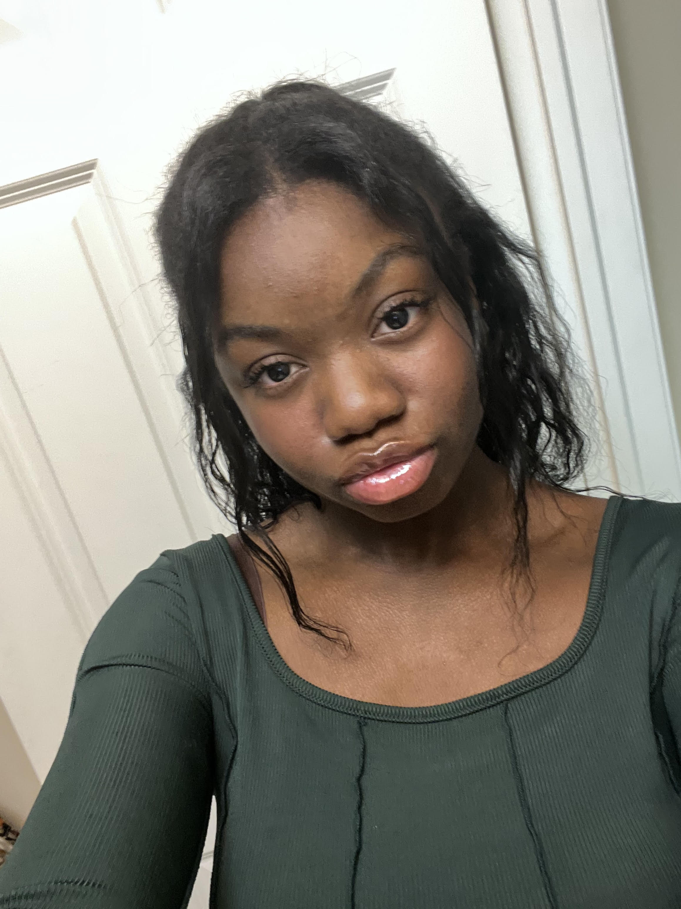

Hi everyone! I am Oni Hairston and I am a 17 year old programmer who is currently enrolled in a programming and software development class. I grew up in Columbus but moved to northeast Ohio around 4th grade! Being here introduced me to many new opportunities like this class I'm in! I also played voleyball for a little bit of my life as well. Determination is a great skill that I have and I always use to to further myself in life. Going to college for CompSci and becoming a software developver is my goal! Oh and I love to draw too.
Hi everyone! I am Oni Hairston and I am a 17 year old programmer who is currently enrolled in a programming and software development class. It is at my trade-school and this is my second year being exposed to coding and I am really loving it so far. I have learned some Java, HTML, and CSS here! My goal is to master some other programming languages(C# or C++) and head out to college for Computer Science. This trade-school has also exposed me to many new friends who actually share the same interest as me! I am someone who can be very determined when there is something I want to achieve so becoming a software developer at an amazing company is my ultimate dream! By the way my top favorite things in life are animals, playing video-games, or drawing. Coding is up there as well!